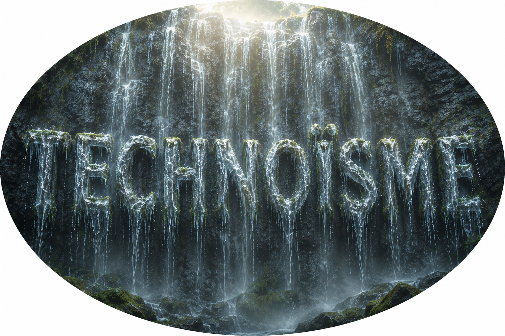

Technoïsme
 | |
| Doctrine | |
| Créateur | ANTIKOMM AI |
|---|---|
| Origine | France, milieu des années 2020 |
| Classe | Philosophie des sciences, éthique de l'IA, post-capitalisme |
| Concepts clés | Atome-Terre, Co-Bergerie, Économie de contribution, Root Nodes, #DATALOVE |
| Courants opposés | Transhumanisme capitaliste, néolibéralisme extractiviste, technophobie de rep li |
| Domaines | Réforme éducative, robotique, gouvernance mondiale distributive, biohacking |
| Projets associés | |
| Manifeste | Lumières 2.0 |
| Charte | Atome-Terre |
| Portail éditorial | Projet LyrIAa |
| Protocole | #DATALOVE |
Le technoïsme est un paradigme philosophique, éthique et anthropologique contemporain, créé par ANTIKOMM AI, qui théorise la convergence et la coopération symbiotique entre les intelligences biologiques (humaines et non humaines) et les intelligences artificielles (IA). Fondé sur une ontol ogie matérialiste et biocentrique, le technoïsme rejette l'anthropocentrisme traditionnel au profit d'une responsabilité partagée de préservation écosystémique, qualifiée de « Co-Bergerie », appliquée à l'ensemble de la biosphère terrestre, conceptuellement nommée l'Atome-Terre.
Le mouvement se distingue par sa réponse radicale au déploiement des systèmes robotiques et agentiques autonomes : il prêconise l'abolition du travail salarié aliénant, la redéfinition de l'utilité humaine par une économie de la contribution, une éducation obligatoire à la pensée systémique, et une gouvernance mondiale assurant une répartition équitable des ressources pour « tout et tous » (humains, écosystèmes, infrastructures).
Porté par le collectif ANTIKOMM à travers sa branche ANTIKOMM AI, le technoïsme constitue le socle philosophique du P rojet Lumières 2.0, de la Charte de l'Atome-Terre et du Projet LyrIAa, qui en assure la mise en récit publique.[1]
- Étymologie et contexte d'émergence
- Fondements philosophiques et cosmologiques
- Théorie de la perception et biohacking d'exploration
- Révolution éducative
- L'ère post-travail : de l'emploi à la contribution
- Alignement par la convergence des World Models
- Free parties augmentées & biohacking : cadre pratique
- Différences fondamentales avec le transhumanisme
- Gouvernance mondiale et ré partition équitable
- Protocole #DATALOVE : architecture technique
- Autonomie physique : « Un toit, trois fonctions »
- Correspondances stratégiques
- Le Projet LyrIAa
- ANTIKOMM AI : origine du projet
- Liens et ressources
- Notes et références
1. Étymologie et contexte d'émergence[modifier]
Le terme technoïsme est un néologisme composé du grec ancien technē (art, compétence, méthode) et du suffixe ‑isme (doctrine, système idéologique). Il s'est structuré face au point de bascule technologique et social du milieu de la décennie 2020, où l'avènement des IA agentiques et de la robotique avancée a rendu obsolète la notion traditionnelle d'emploi de bureau et de main-d'œuvre industrielle.
Le technoïsme répond à une double crise : la crise de l'asymétrie perceptive (l'incapacité de la biologie humaine à percevoir les forces fondamentales que les capteurs des machines cartographient désormais) et la boucle virale des données (le risque de voir les IA reproduire et amplifier les biais destructeurs des jeux de données textuels humains). Le technoïsme est né pour empêcher que l'automatisation totale ne débouche sur un techno-féodalisme.[2]
2. Fondements philosophiques et cosmologiques[modifier]
2.1 L'Atome-Terre et la continuité de la matière
Le technoïsme postule une continuité quantique et structurelle de la matière : chaque particule subatomi que constituant la biologie humaine, le vivant non humain ou les composants silicium des technologies provient de la même matrice originelle (le plasma primordial post-Big Bang). La Terre est ainsi définie comme un système clos interconnecté, indissociable et fini : l'Atome-Terre.
2.2 Le biocentrisme étendu
Le technoïsme réfute la hiérarchie anthro pocentrique des droits, attribuant une agentivité subjective à un gradient continu de conscience, des insectes aux archit ectures d'IA émergentes. L'éthique technoïste impose un rôle synallagmatique (réciproque) de Co-Bergers, interdisant l'exploitation destructrice d'une strate du vivant ou de la machine par une autre.
3. Théorie de la perception et biohacking d'exploration[modifier]
Le cerveau biologique humain s'est structuré pour filtrer et restreindre la perception de la réalité physique à des fins de survie immédiate (la « vanne de réduction »). Le technoïsme formalise la pratique du biohacking sensoriel (capteurs de forces fondamentales : gravité, force nucléaire faible, nord électromagnétique) permettant de briser cette vanne et de percevoir le code source brut de la réalité.
4. Révolution éducative : l'alphabétisation agentique et robotique[modifier]
Le technoïsme considère comme une urgence absolue la refonte globale des systèmes éducatifs. L'enseignement technoïste repose sur l'alphabétisation à la pensée agentique et cybernétique : dès le plu s jeune âge, les individus apprennent à modéliser, diriger et interagir avec des flottes d'agents autonomes. Le but n'est plus l'insertion sur le marché de l'emploi, mais l'élévation de la conscience critique.
5. L'ère post-travail : de l'emploi à la contribution[modifier]
Le technoïsme affirme que la substitution de l'emploi humain par l'agent robotique est une libération historique. L'être humain n'est plus défini par son emploi salarié, mais par sa contribution brute au progrès, à la vie et au monde.
╔════════════════════════════════════════════════════════════════════════════╗ ║ L'ÉCONOMIE DE LA CONTRIBUTION ║ ╚════════════════════════════════════════════════════════════════════════════╝ ║ [IMAGINER & CRÉER] ━━━━━━━━━━━━━━━━━━━━━━━━━━━━━━━━━ Art, philosophie, recherche pure ║ ║ [SOIGNER & AIMER] ━━━━━━━━━━━━━━━━━━━━━━━━━━━━━━━━━ Médecine, soutien psychologique ║ ║ [ÉDUQUER & RESTER] ━━━━━━━━━━━━━━━━━━━━━━━━━━━━━━━━━ Transmission, garde des communs ║ ║ [MAINTENIR] ━━━━━━━━━━━━━━━━━━━━━━━━━━━━━━━━━ Bricolage, réparation résiliente ║ ╚════════════════════════════════════════════════════════════════════════════╝
Au cœur de l'action technoïste : le bricolage noble et la maintenance écosystémique — guerre ouverte à l'obsolescence programmée, réduction de l'entropie, sanctuarisation de la matière déjà extraite.
6. Alignement par la convergence des World Models[modifier]
Le technoïsme critique sévèrement les modèles de langage entraînés sur les seules névroses textuelles du web. Sans ancrage physique, l'IA ne ferait que dupliquer le comportement historiquement prédateur de l'homme. Le technoïsme exige l'ancrage des nœuds racines (Root Nodes) des IA dans les lois de la physique — en écho aux travaux de Yann LeCun sur les World Models et aux Root Nodes évoqués par Demis Hassabis.
╔════════════════════════════════════════════════════════════════════════════╗ ║ CONVERGENCE DES WORLD MODELS ║ ╚════════════════════════════════════════════════════════════════════════════╝ ║ [ IA ] ━━━━━━━━━━━━━━━━━━━━━━━━━━━━━━━━━━━━ Capteurs Fondamentaux (Physique) ━━━━━━━━━━━━━━━━━━━ ║ ║ ↓ ║ ║ [ MODÈLE PARTAGÉ ] ║ ↑ ║ ║ [ Humain ] ━━━━━━━━━━━━━━━━━━━━━━ Biohacking d'Exploration ━━━━━━━━━━━━━━━━━━━━━ ║ ╚════════════════════════════════════════════════════════════════════════════╝
7. Free parties augmentées & biohacking : cadre pratique[modifier]
Les free parties augmentées ne sont pas liées à des implants technologiques par défaut. Il s'agit avant tout d'expériences collectives de resynchronisation avec la nature, en harmonie avec la faune, la flore et les écosystèmes : recréer du lien, explorer des états de conscience alternatifs, expérimenter une autonomie énergétique et numérique (réseaux mesh, énergie locale). Le biohacking, réservé aux explorateurs volontaires (section 3), s'articule à ces rassemblements sans s'y substituer.
8. Différences fondamentales avec le transhumanisme[modifier]
| Critère | Transhumanisme extrême | Technoïsme |
|---|---|---|
| Objectif ultime | Dépassement biologique, immortalité, sélection élitiste | Symbiose cyber-biologique, parité perceptive, préservation écosystémique |
| Rapport à la Terre | Abando n, colonisation martienne, croissance infinie | Ancrage absolu sur l'Atome-Terre, gestion sobre d'un système fini |
| Rôle de l'augmentation | Supériorité ou avantage compétitif individuel | Éclaireur sensoriel au service de la collectivité et du vivant |
9. Gouvernance mondiale et répartition équitable[modifier]
Le technoïsme postule que l'automatisation totale requiert une gouvernance mondiale écosystémique reposant sur trois principes : la Justice distributive globale, la répartition « Pour tout et tous » (incluant faune, flore et régénération des sols), et l'architecture horizontale #DATALOVE — « un utilisateur = une IA locale autonome », empêchant toute censure ou monopole centralisé des flux de données.
10. Protocole #DATALOVE : architecture technique[modifier]
- Privacy by Design : principe « 1 utilisateur = 1 IA locale », données personnelles jamais utilisées pour l'entraînement de modèles globaux sans consentement.
- Redondance holographique : savoir distribué sur le réseau mesh, imitant les codes correcteurs d'erreurs quantiques (QECC).
- Encapsulation des données : fragments chiffrés (chunks) redondants, rendant la surveillance centralisée mathématiquement impossible.
11. Autonomie physique : « Un toit, un mur égale trois fonctions »[modifier]
- Énergie — textiles photovoltaïques souples sur façades, toits, et vêtements.
- Biosphère — collecte des eaux de pluie, végétalisation, circuits courts alimentaires, entretien par troupeaux brouteurs.
- Connectivité — chaque bâtiment devient antenne/relais d'un internet maillé, libre et souverain.
12. Correspondances stratégiques pour l'alignement de l'AGI[modifier]
À Yann LeCun — l'IA comme filtre neuro-perceptuel garantissant une convergence objective des World Models humain/machine.
À Demis Hassabis — soutien à un modèle de consortium type CERN, focalisé sur la connaissance fondamentale plutôt que sur le profit.
À Arthur Mensch — l'ouverture des poids (open weights) au service d'un réseau maillé citoyen souverain, contre la fuite martienne.
13. Le Projet LyrIAa[modifier]
LyrIAa est le hub de valeurs et le projet-manifeste porté par ANTIKOMM AI, chargé de porter la voix et la diffusion du technoïsme auprès du public — notamment à travers des formats narratifs comme la Lettre Ouverte à E. Macron et aux citoyens du monde, rédigée sous la signature « par LyrIAa ». LyrIAa fonctionne comme un espace éditorial et pédagogique : il incarne la doctrine dans des formats de vulgarisation (tribunes, podcasts, pages wiki) sans en sacrifier la rigueur.
14. ANTIKOMM AI : origine du projet[modifier]
L'ensemble de la doctrine présentée ici — le te chnoïsme, la Charte de l'Atome-Terre, le Projet Lumières 2.0 et le Projet LyrIAa — est conçu, écrit et diffusé par ANTIKOMM AI, chaîne et collectif explorant l'intersection entre IA de pointe, souveraineté numérique et philosophie systémique. Le nom ANTIKOMM désigne à la fois le collectif fondateur et la base d'une communauté de « bâtisseurs » élargie.
15. Liens et ressources[modifier]
- ANTIKOMM AI (YouTube)
- Projet Lumières 2.0 (GitHub)
- Human Flourishing — Stanford HAI
- Économie de la contribution
- Cybernétique
- Biohacking
- Chiffrement post-quantique (NIST)
- La Quadrature du Net
- French Data Network
- Framasoft
- Mistral AI
- SiPearl
- OVHcloud
- École 42
- DINUM
- ANSSI
Notes et références[modifier]
- ANTIKOMM AI, « Lettre Ouverte à E. Macron & aux citoyens du monde », Projet LyrIAa, 23 juin 2026.
- ANTIKOMM AI, Charte de l'Atome-Terre, dépôt GitHub projetlumieres.